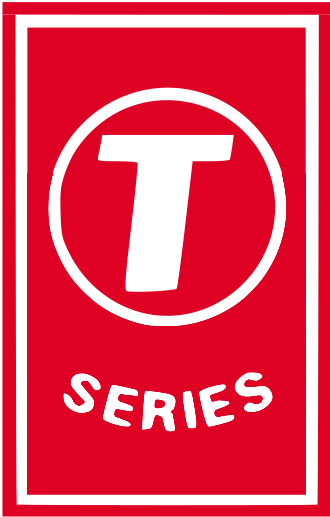

T-Series
Super Cassettes Industries Private Limited, doing business as T-Series, is an Indian music record label and film production company founded by Gulshan Kumar in 1983. It is primarily known for Bollywood music soundtracks and Indi-pop music. As of 2014, T-Series is India's largest music record label, with up to a 35% share of the Indian music market, followed by Sony Music India and Zee Music.
Kumar, initially a fruit juice seller in Delhi, founded T-Series to sell pirated Bollywood songs, before the company eventually began producing new music. Their breakthrough came with the soundtrack for the 1988 Bollywood blockbuster Qayamat Se Qayamat Tak, composed by Anand-Milind, written by Majrooh Sultanpuri, and starring Aamir Khan and Juhi Chawla, which became one of the best-selling Indian music albums of the 1980s, with over 8 million sales. They eventually became a leading music label with the release of Aashiqui (1990), composed by Nadeem–Shravan, which sold 20 million copies and became the best-selling Indian soundtrack album of all time. However, Gulshan Kumar was murdered by the Mumbai mafia syndicate D-Company in 1997. Since then, T-Series has been led by his son Bhushan Kumar and younger brother Krishan Kumar.
On YouTube, T-Series has a multi-channel network, with 29 channels that have more than 140 million subscribers as of January 2019. The company's YouTube team consists of 13 people at the T-Series headquarters. The company's main T-Series channel on YouTube primarily shows music videos as well as film trailers. In January 2017, it became the most-viewed YouTube channel, with 61.5 billion views as of 10 February 2019. With over 85 million subscribers as of 11 February 2019, it also ranks as the second most-subscribed channel behind PewDiePie. The T-Series channel primarily features content in the Hindi language, in addition to Urdu and Punjabi language content, while they have other channels that also feature content in other Indian languages such as Tamil, Telugu and Sanskrit.